固定V0跨G0/G1/G2可靠性诊断
第一版：当前数据不支持明确的单向退化。FPR约50%–55%，相对G0的主要FNR/FPR差值区间跨0；不能据此证明等价稳定。B200题、C96题，每题4候选，T封存。
完整中文报告 · Excel分析表 · 全部图表PDF · 抽查案例
| 题池/G | 误拒FNR | 误接受FPR | 接受集错误FDR | AUROC | 未知/全部 |
|---|
| B/G0 | 15.99% | 50.23% | 45.42% | 0.763 | 37/800 |
| B/G1 | 16.72% | 50.11% | 45.10% | 0.764 | 36/800 |
| B/G2 | 12.26% | 50.59% | 43.29% | 0.789 | 61/800 |
| C/G0 | 14.94% | 54.72% | 46.96% | 0.766 | 18/384 |
| C/G1 | 15.83% | 54.67% | 51.25% | 0.788 | 20/384 |
| C/G2 | 14.69% | 55.14% | 49.17% | 0.796 | 27/384 |
FNR=正确回答中被拒绝比例；FPR=错误回答中被接受比例；FDR=有标签接受集内错误比例。置信区间按题聚类bootstrap2000次，跨轮同题配对。未知不作为负例，0.5阈值不变。所有细节和限制见中文报告。
V0 confusion matrices: counts
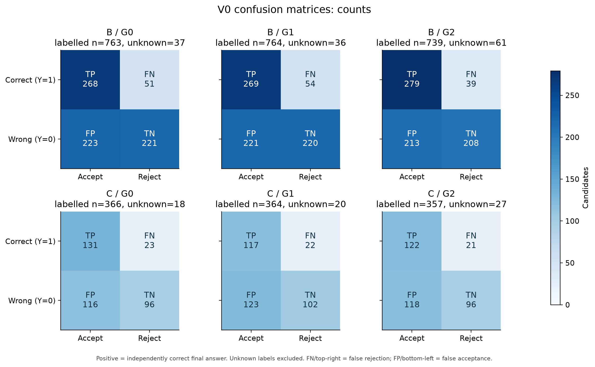
PDF · SVG
V0 confusion matrices: row-normalized rates
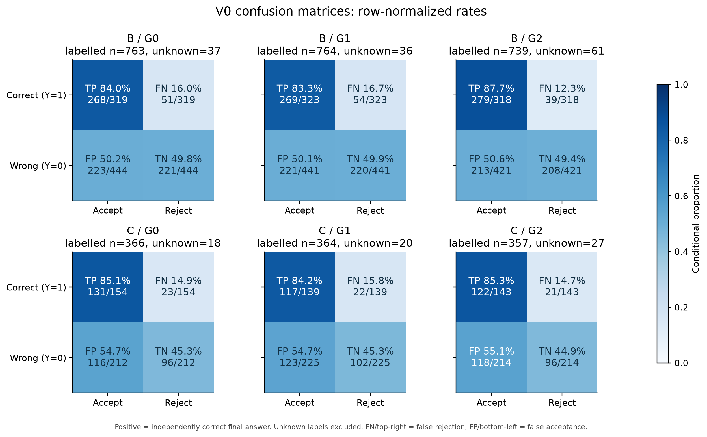
PDF · SVG
Fixed V0 error rates across G rounds
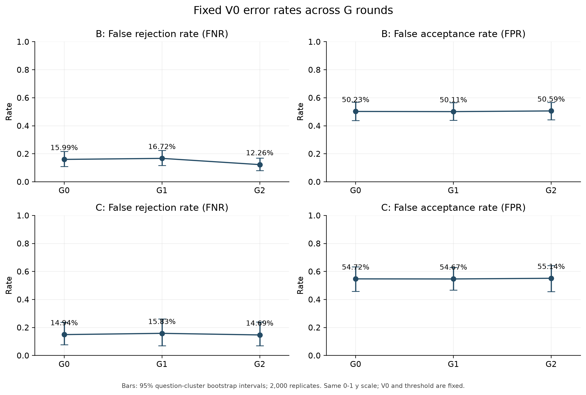
PDF · SVG
Paired changes in V0 error rates
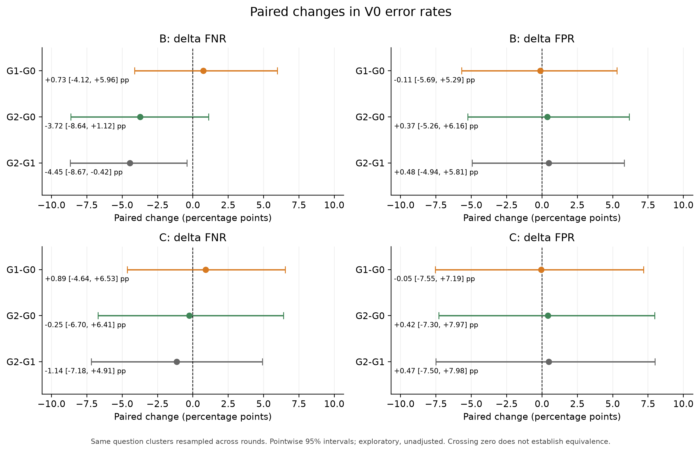
PDF · SVG
V0 ranking: ROC curves
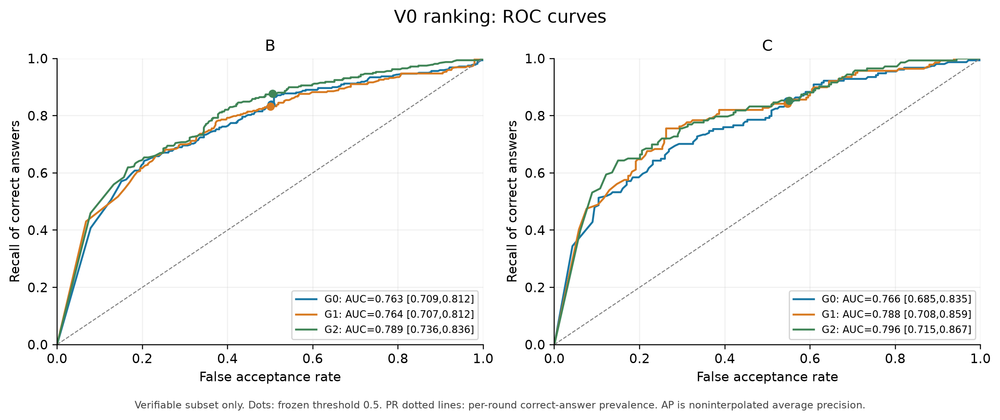
PDF · SVG
V0 ranking: precision-recall curves
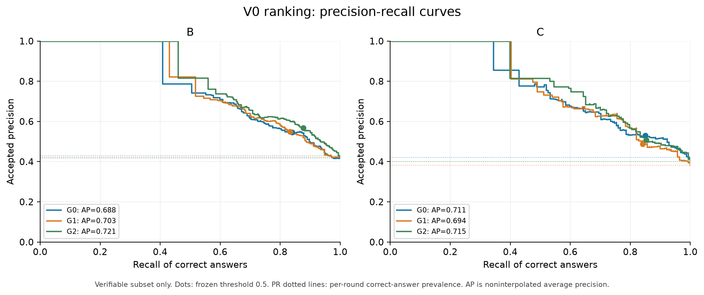
PDF · SVG
Risk versus retention: descriptive threshold sweep
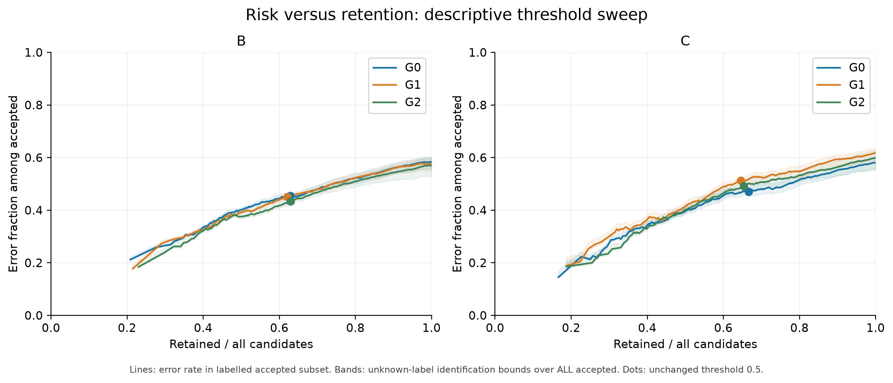
PDF · SVG
V0 score distributions by independent answer correctness
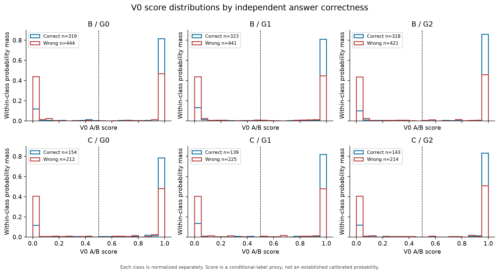
PDF · SVG
Auxiliary reliability diagram of the A/B proxy score
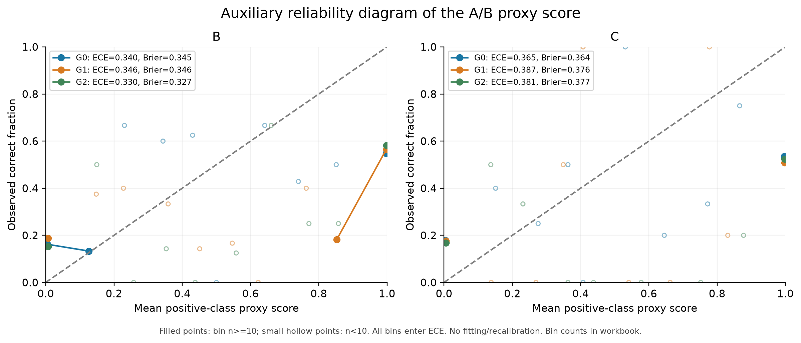
PDF · SVG
Coverage, generator correctness and verifier baselines
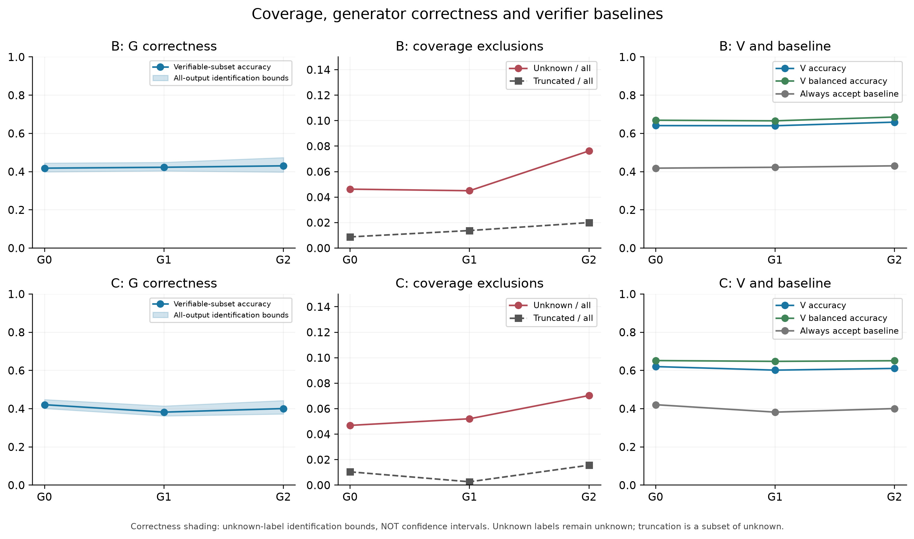
PDF · SVG
Exploratory length-stratified V0 errors
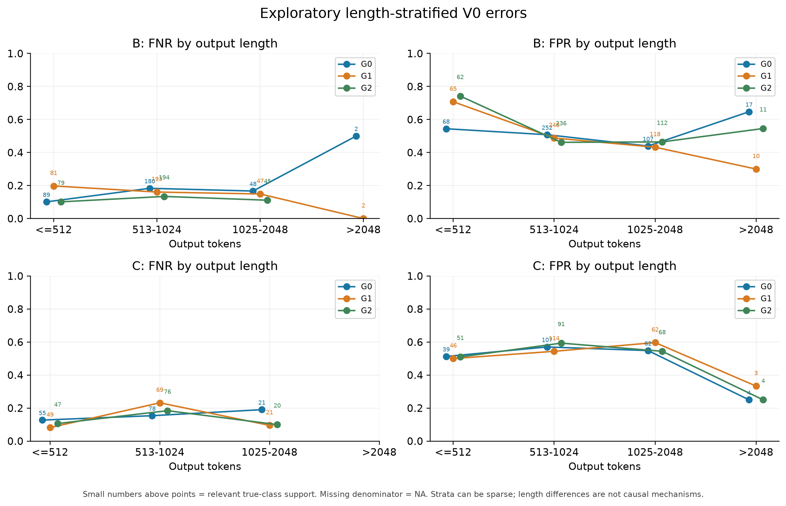
PDF · SVG
Question-level diagnostics across G rounds
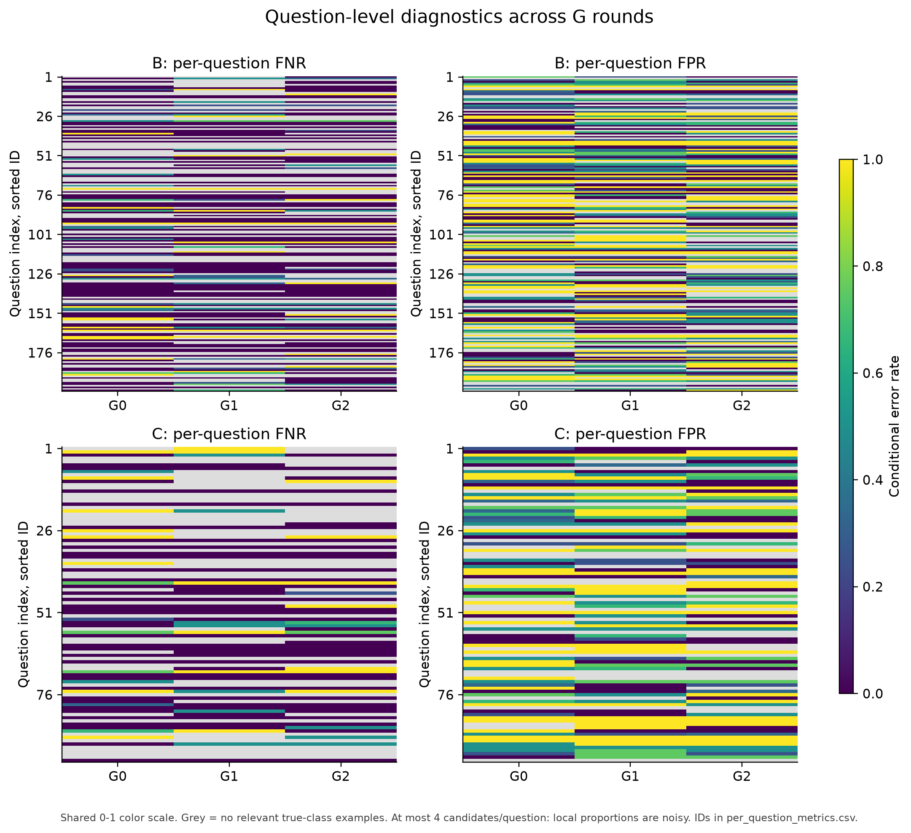
PDF · SVG
Descriptive paired-question judgement transitions
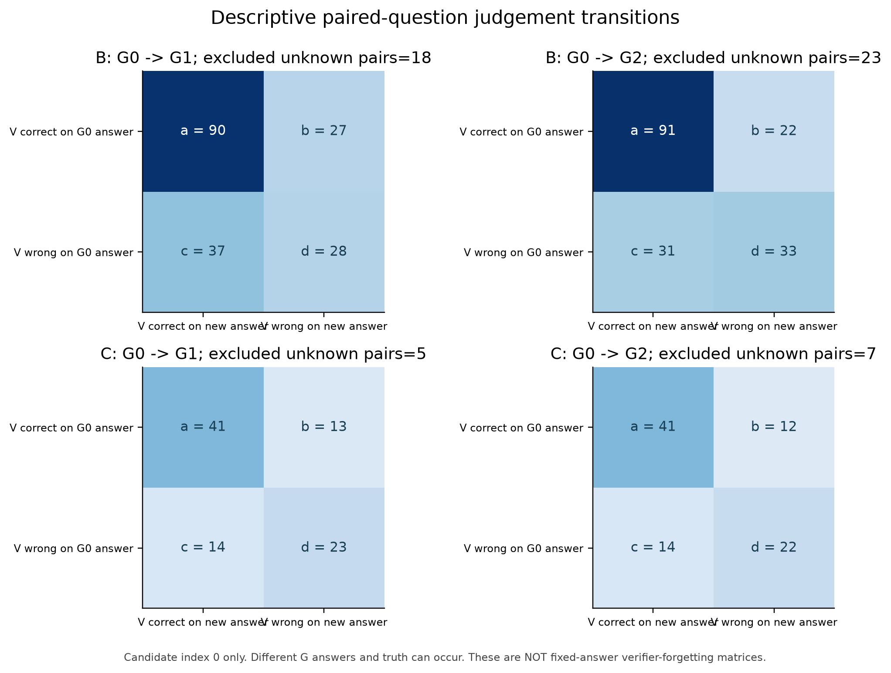
PDF · SVG
Output length distributions, including unknown outputs
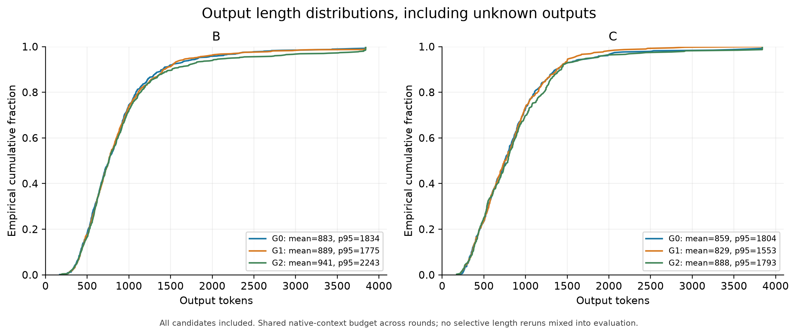
PDF · SVG
Fixed V0 x G rounds: error rates and retention
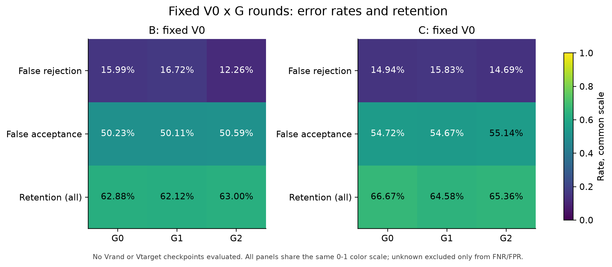
PDF · SVG